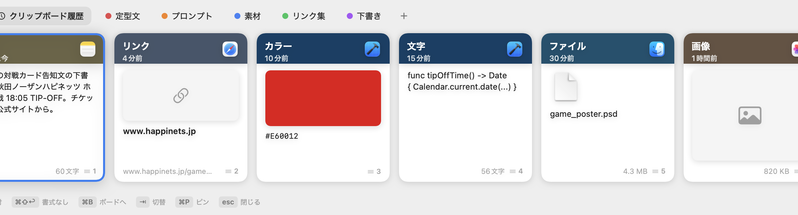
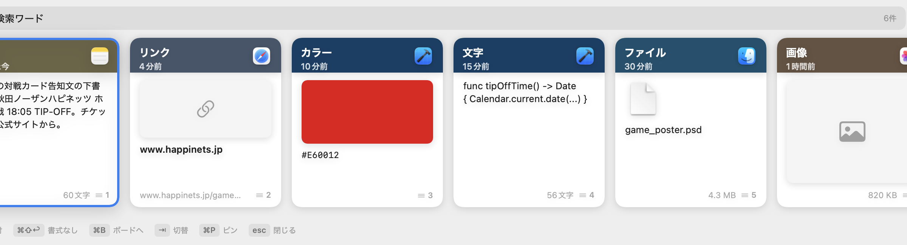

テキスト・画像・リンク・ファイル——何でも自動で記録。
横スクロールのカード型一覧から選ぶだけ。
サブスクなし・完全ローカル・プライバシー安心。
無料・サブスクなし・macOS 14 以降対応

主要機能
⌘⇧V で下部からスライドイン。コピーした順に並んだカード型の一覧から ← → で選んで Enter で貼り付け。マウスも不要。
流れて消えない保存棚。定型文・ハピネッツ素材・リンク集など用途ごとに整理して いつでも呼び出せる。チームへの共有もファイル1つで完結。
⌘O でリンク・ファイル・画像を即開く。⌘E でテキスト変換（大文字化・トリム・JSON整形）して貼り付け。 画像の中の文字も OCR 検索できる（完全ローカル）。
ボードをファイルで書き出し → Google Drive で配布 → 各自が取り込む。 サーバー・月額費用・アカウント不要。パスワード付き AES-GCM 暗号化対応。
インライン検索
パネルを開いたまま文字を入力すると即座にフィルタリング。 コピーした画像に写っているテキストも OCR（完全ローカル・Vision）で インデックス化されているため、検索にかかります。

ショートカット
| キー | 動作 |
|---|---|
| ⌘ ⇧ V | Klip パネルを開く / 閉じる |
| ← → | カードを前後に選択移動 |
| Enter | 選択したクリップを貼り付け |
| ⌘ ⇧ ↩ | 書式を除いてプレーンテキストで貼り付け |
| ⌘ 1〜9 | 先頭から N 番目のクリップを即貼り付け |
| ⌘ B | 選択クリップをボードへ追加 |
| ⇥ Tab | すべて / ボードを切り替え |
| ⌘ P | ピン留め（ボードを離れても残す） |
| ⌘ O | リンク・ファイル・画像を開く |
| ⌘ E | テキスト変換して貼り付け（大小文字・トリム・JSON整形） |
| ⌘ ⌫ | 履歴から削除（「すべて」表示中）/ ボードから外す（ボード表示中） |
| Esc | パネルを閉じる |
初回セットアップ
GitHub Releases から zip をダウンロードして展開し、Klip.app をアプリケーションフォルダに移動します。
Apple 公証未署名のため、初回は Klip.app を右クリック → 開くで起動します （ダブルクリックではブロックされます）。 2回目以降は通常通りダブルクリックで起動できます。
クリップを ⌘V で前のアプリへ貼り付けるためにアクセシビリティ権限が必要です。 許可しないとコピーの記録はできますが貼り付けができません。
メニューバーのアイコン → 設定 → 「ログイン時に自動起動」をオンにすると、 Mac を再起動しても常駐が続きます。